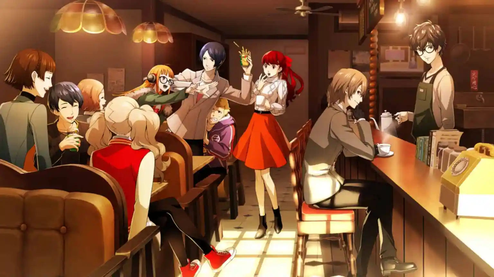
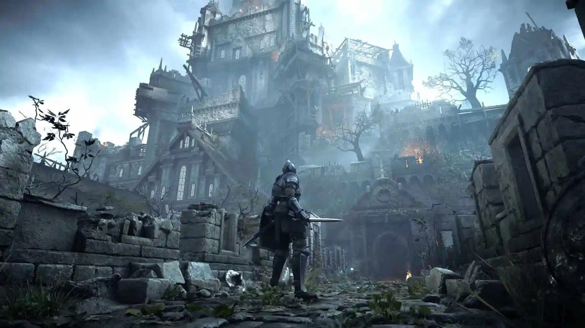

បន្ទាប់ពីព្រឹត្តិការណ៍នៃ Marvel's Spider-Man Remastered ក្មេងជំទង់ Miles Morales កំពុងសម្របខ្លួនទៅនឹងផ្ទះថ្មីរបស់គាត់ ខណៈពេលដែលដើរតាមគន្លងរបស់អ្នកណែនាំរបស់គាត់គឺ Peter Parker ក្នុងនាមជា Spider-Man ថ្មី។
God of War Ragnarök
រាល់ដំណើរផ្សងព្រេងដ៏អស្ចារ្យគឺជារឿងមួយដែលរង់ចាំការប្រាប់
រស់ឡើងវិញ Kratos និងដំណើររឿង Norse របស់ Atreus តាំងពីដើមដំបូងនៅក្នុង Myths of Midgard ។ អ្នកដែលថ្មីចំពោះ God of War នឹងត្រូវបានព្រមានជាមុន៖ ការរំខាននៅខាងមុខ។
ការរៀបចំដ៏ខៀវស្រងាត់ របស់ Ghost of Tsushima ពិតជាបានផ្តល់នូវការរត់គេចខ្លួនដែលខ្ញុំត្រូវការក្នុងអំឡុងឆ្នាំដ៏ច្របូកច្របល់នេះ។ ការដើរកាត់វាលផ្កាដ៏អស្ចារ្យគឺជាការមើលឃើញ ហើយខ្ញុំនឹងមិនឈប់នៅពេលឆាប់ៗនេះទេ។
4. Persona 5 Royal

ទោះបីជា Persona 5 ចេញផ្សាយដំបូងក្នុងឆ្នាំ 2017 ក៏ដោយ Atlus បានប្រទានពរដល់យើងម្តងទៀតជាមួយនឹង Persona 5 Royal ជាមួយនឹងបរិមាណដ៏គួរឱ្យភ្ញាក់ផ្អើលនៃមាតិកាថ្មី និងការផ្លាស់ប្តូរគុណភាពជីវិតដែលត្រូវការច្រើន។ ការផ្លាស់ប្តូរដ៏ធំបំផុតសម្រាប់ខ្ញុំគឺការមាន Morgana មិនមែនជាការឈឺចាប់នៅក្នុងលាទេតើខ្ញុំត្រូវទេ? បើចង់ដើរលេងពេញមួយយប់ ទុកឲ្យខ្ញុំ។
Persona 5 Royal គឺជា បទពិសោធន៍ Persona 5 ដ៏ច្បាស់លាស់ ហើយស័ក្តិសមឥតខ្ចោះសម្រាប់អ្នកដែលទើបនឹងចេញស៊េរី ឬអតីតយុទ្ធជនដែលបានបញ្ចប់រឿងដើមរួចហើយ។ សម្រាប់អ្នកដែលបានដកខ្លួនចេញអស់ជាង 100 ម៉ោងក្នុង Persona 5 សូមត្រៀមខ្លួនធ្វើវាម្ដងទៀតជាមួយ Persona 5 Royal ។
3. ព្រលឹងបិសាច

ចេញដំបូងក្នុងឆ្នាំ 2009 សម្រាប់ PlayStation 3 ពីកម្មវិធី Demon's Souls បុរាណនៃការគោរពសាសនា បានផ្តល់កំណើតដល់ប្រភេទរងថ្មីទាំងស្រុង។ ទោះបីជា D ark Souls បានផ្ទុះឡើង និងក្លាយជាបាតុភូតទូទាំងពិភពលោកក៏ដោយ Demon's Souls ត្រូវបានទុកចោលនៅលើ PlayStation 3 ព្រោះវាមិនដែលបានទទួល remaster ឬចេញផ្សាយឡើងវិញរហូតមកដល់ពេលនេះ។ អ្វីដែល Bluepoint Games បានធ្វើគឺជាអ្វីដែលគួរឲ្យកត់សម្គាល់។
Naughty Dog បានផ្តល់ស្នាដៃដ៏អស្ចារ្យ។ The Last of Us Part II គឺជាដំណើរកម្សាន្តដែលមិនធ្លាប់មាននៅក្នុងរបៀបដែលវាលាយបញ្ចូលការនិទានរឿង និងការលេងហ្គេម ដែលឈានដល់បទពិសោធន៍ដ៏មានឥទ្ធិពលបំផុតមួយដែលខ្ញុំធ្លាប់មាននៅក្នុងឧបករណ៍ផ្ទុកណាមួយ។ ហានិភ័យនៃការនិទានរឿងដែល Naughty Dog បានធ្វើឡើង ប្រហែលជាមិនកើតឡើងជាមួយមនុស្សគ្រប់គ្នាទេ ប៉ុន្តែការជ្រើសរើសមានអារម្មណ៍ថាពិត និងពិបាកសម្រាប់ខ្ញុំ។ ពេញមួយយុទ្ធនាការដ៏វែងនេះ ខ្ញុំមានអារម្មណ៍សោកសៅ ការក្បត់ ពន្លឺនៃក្តីសង្ឃឹម ហើយទីបំផុតបានពិចារណាឡើងវិញនូវភក្តីភាពរបស់ខ្ញុំ។ ហ្គេមដែលអាចប្រជែងអារម្មណ៍ខ្ញុំក្នុងកម្រិតនោះគឺអស្ចារ្យណាស់។ នេះជាមូលហេតុដែលខ្ញុំចូលចិត្តវីដេអូហ្គេម។ នេះជាមូលហេតុដែលខ្ញុំលេងហ្គេមវីដេអូ។ T he Last of Us Part II បានអង្រួនខ្ញុំដល់ស្នូល ខ្ញុំគ្រាន់តែសង្ឃឹមថាខ្ញុំអាចដោះស្រាយអ្វីៗដែលកើតឡើងបន្ទាប់។